Estrutura, tecnologia e cuidado
Conheça a Dog's Company.
Uma estrutura completa para cuidar do seu pet em todos os momentos.
Da chegada ao diagnóstico, da internação aos cuidados especiais, cada espaço foi pensado para oferecer uma experiência completa.
Conheça nossos espaços ↓- Consultórios
- Laboratório
- Diagnóstico por imagem
- Internação
- Centro cirúrgico
- Banho & Tosa
- Farmácia
Uma visita pela nossa estrutura
Cada espaço tem um propósito.
Conheça os ambientes onde nossa equipe trabalha todos os dias para oferecer cuidado, diagnóstico e tratamento aos pets.
01 · A chegada
Recepção & Farmácia
Um espaço pensado para receber tutores e pets com organização e praticidade.
Produtos e itens para o cuidado do seu pet em um só lugar.
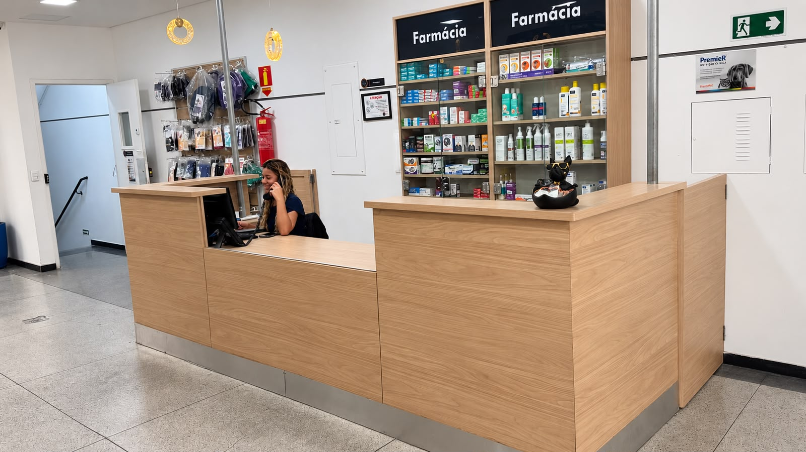
02 · Atendimento
Consultórios
Ambientes preparados para avaliações clínicas e acompanhamento individualizado.
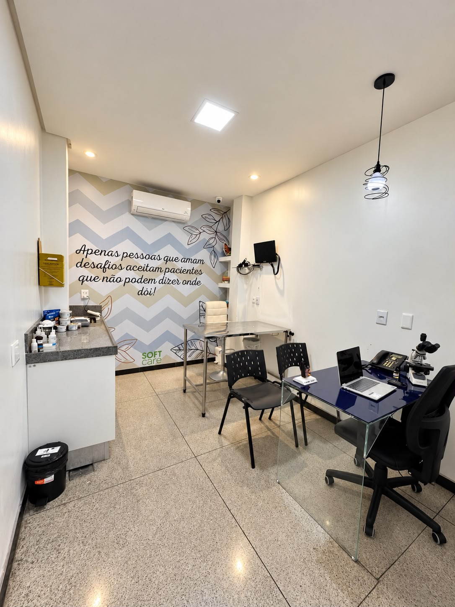
03 · Tecnologia e cuidado
Diagnóstico
Tecnologia para auxiliar na investigação e no cuidado.
Equipamentos de diagnóstico e estrutura laboratorial apoiam a avaliação dos pacientes.
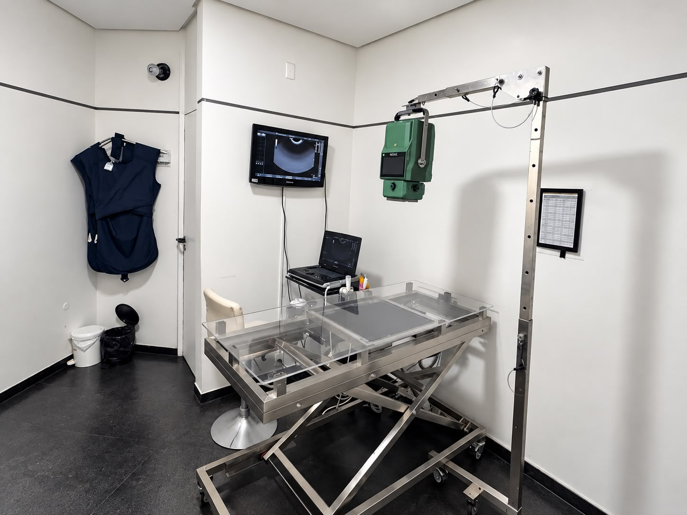
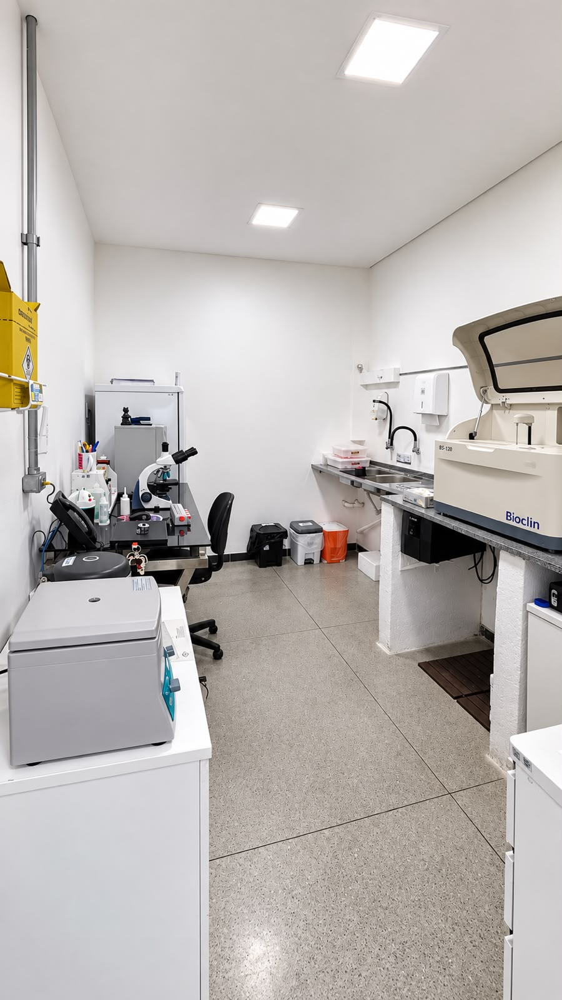
04 · Procedimentos cirúrgicos
Centro cirúrgico
Ambiente equipado para a realização de procedimentos veterinários.
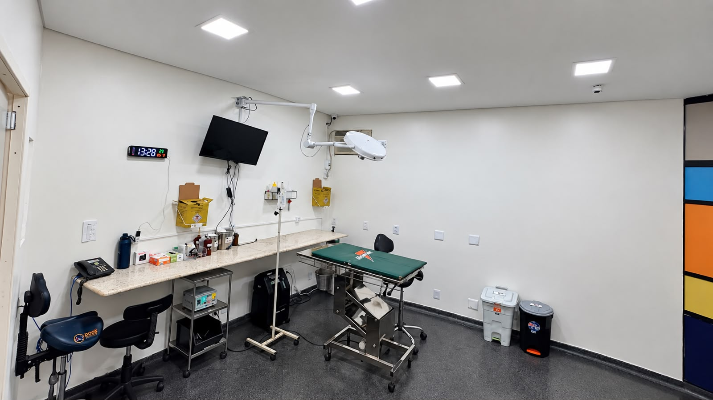
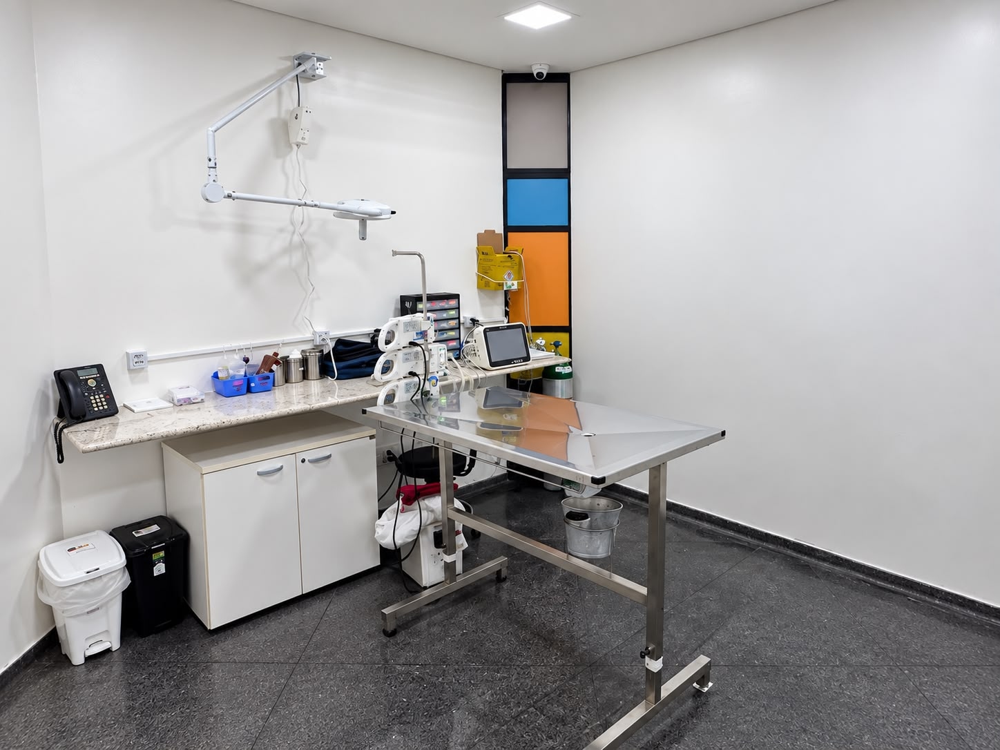
05 · Acompanhamento
Internação
Ambientes preparados para oferecer acompanhamento e cuidado durante a recuperação.
Cuidado individualizado e monitoramento.
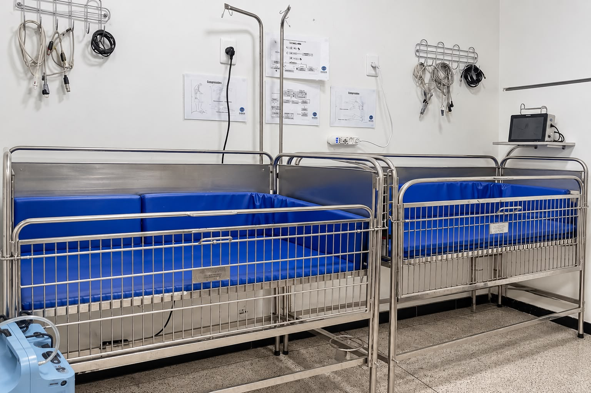
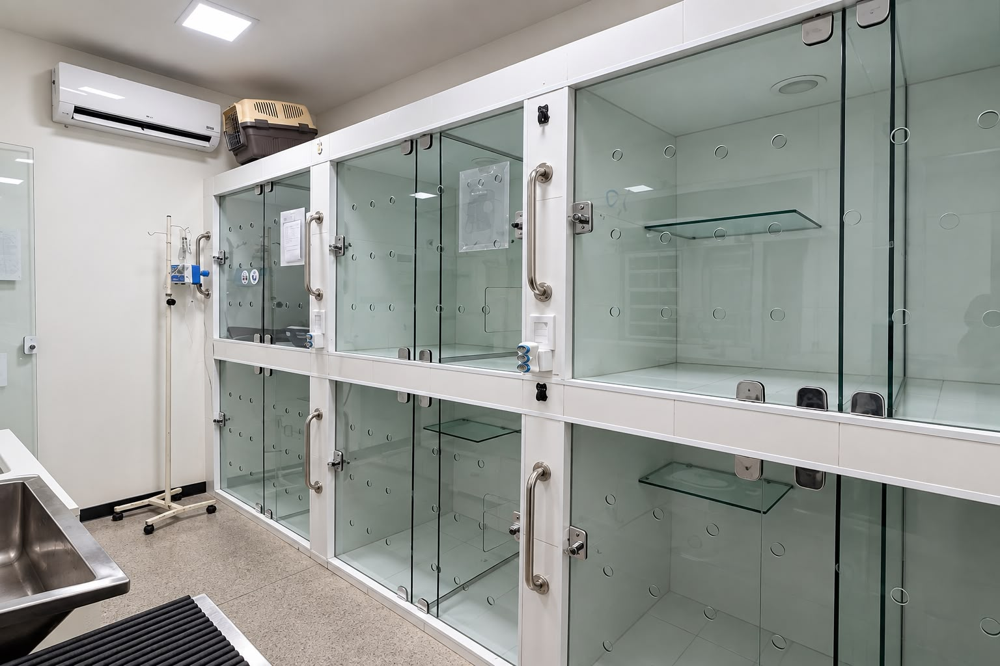
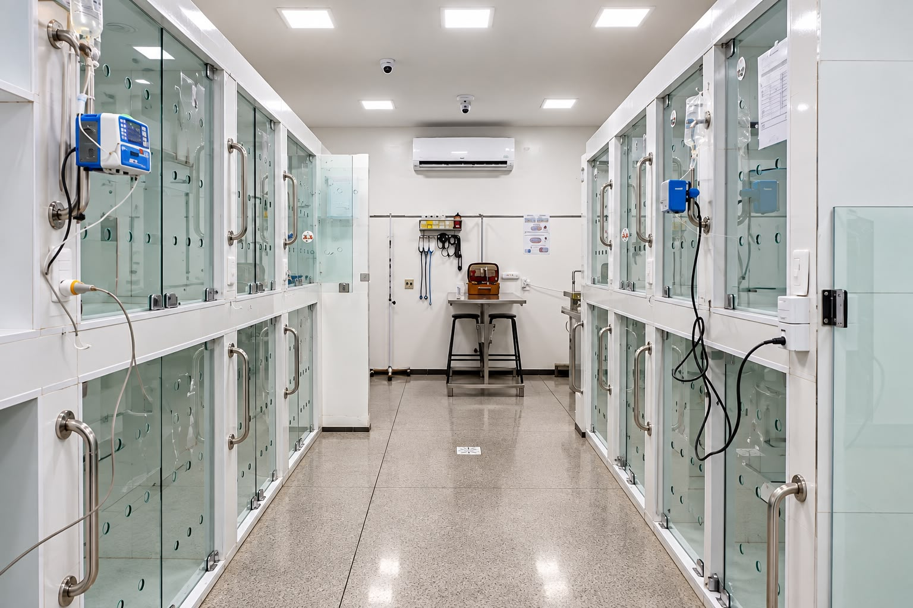
06 · Bem-estar
Banho & Tosa
Cuidado também é bem-estar.
Um espaço para os cuidados de higiene e beleza do seu pet, com profissionais presentes durante o atendimento.
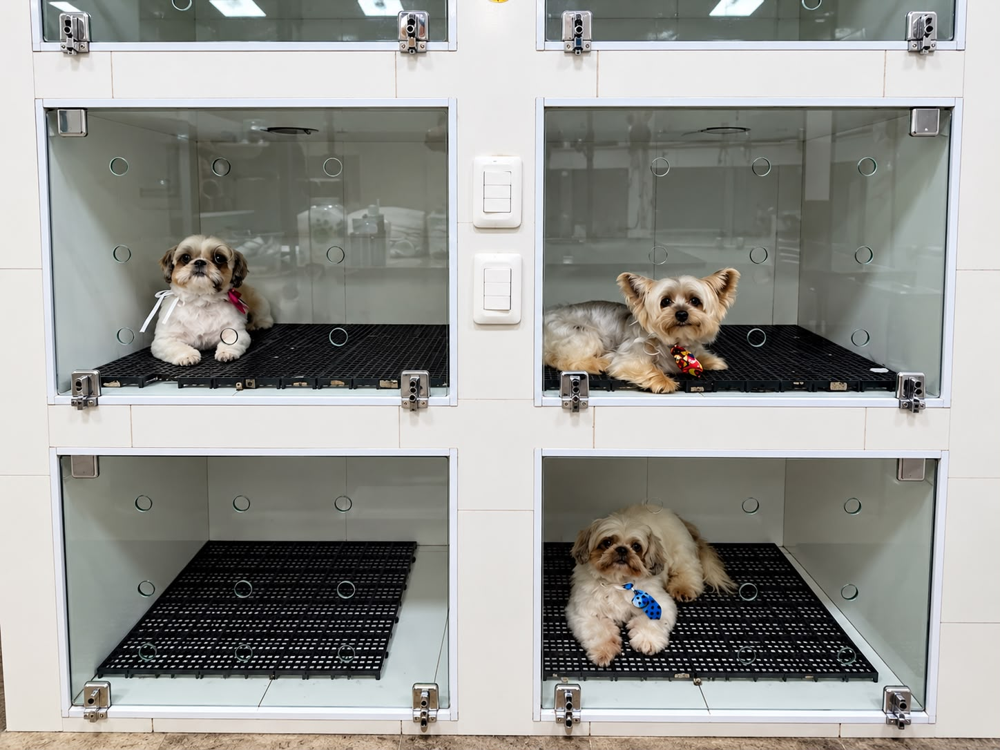
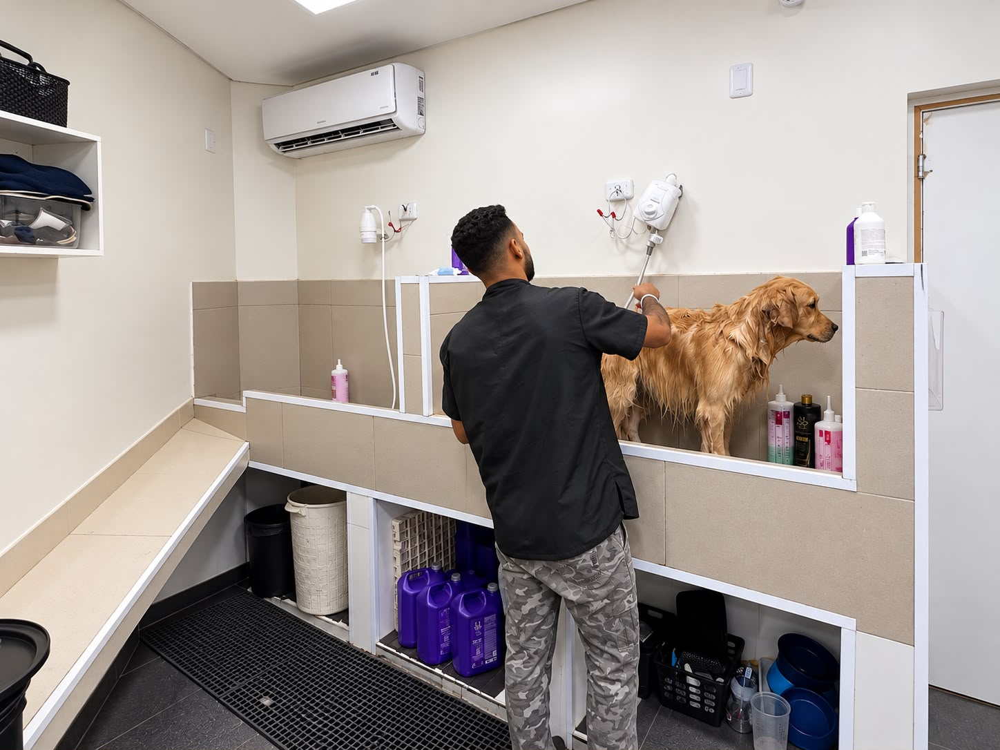
07 · Acesso
Tudo começa na chegada.
Um espaço pensado para facilitar a chegada dos nossos clientes.
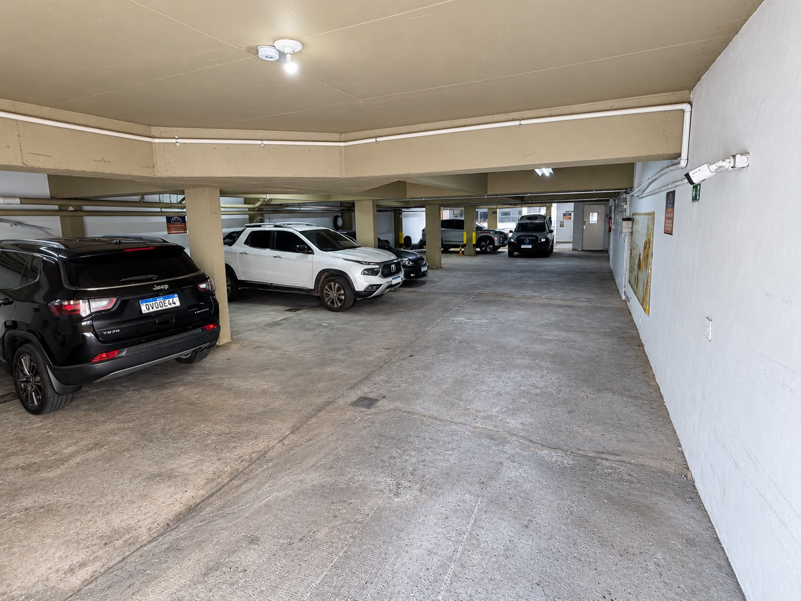
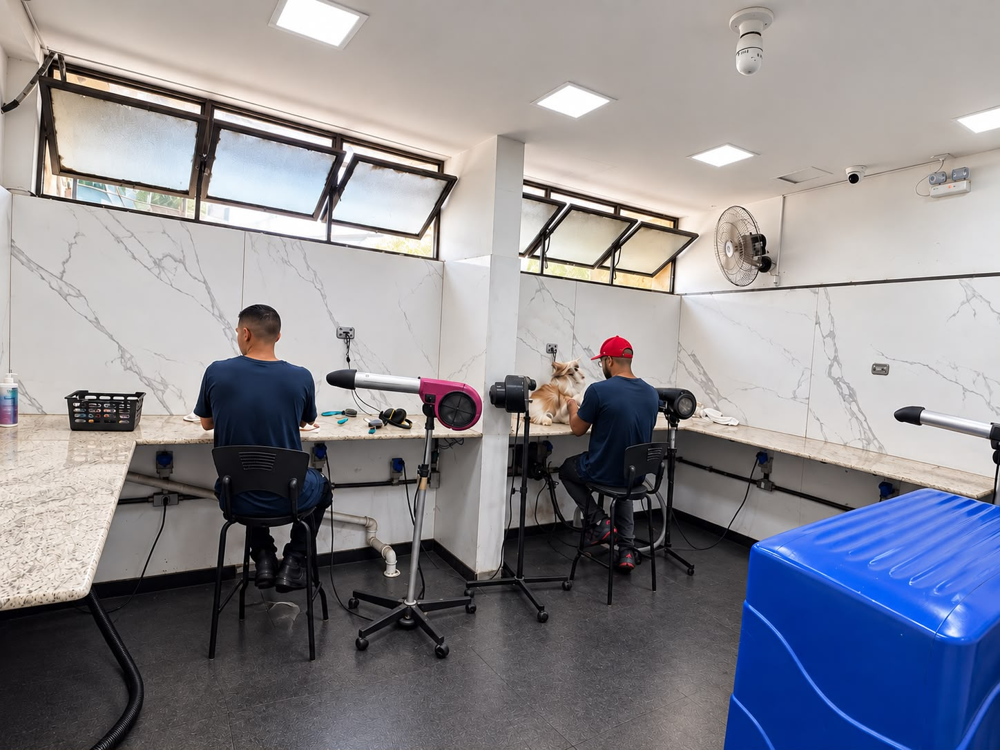
Pessoas por trás do cuidado
Por trás de cada cuidado, existe uma equipe.
A estrutura ganha vida com profissionais que acompanham os pets em diferentes momentos.
Dog's Company
Uma estrutura completa. Um cuidado que acompanha cada etapa.
Estamos preparados para receber você e seu pet.